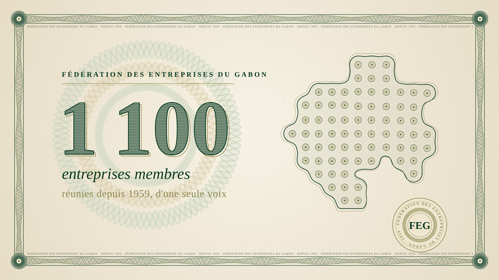
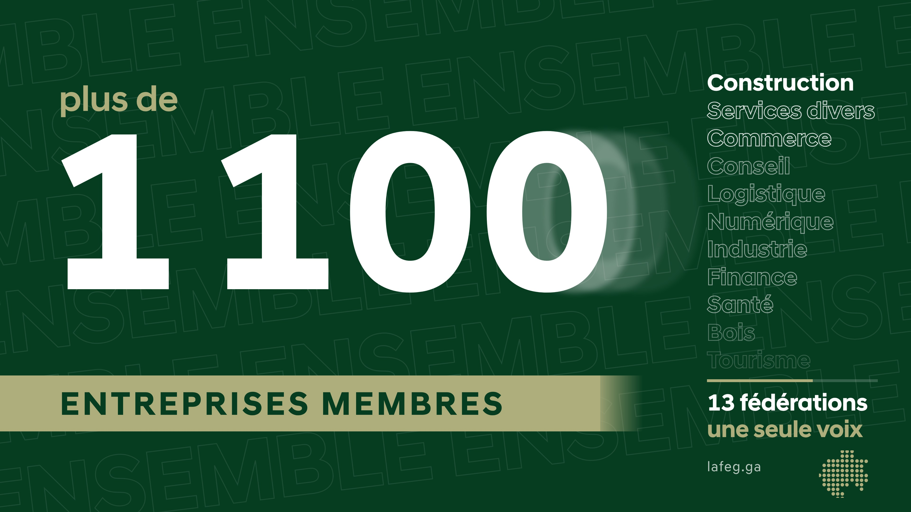
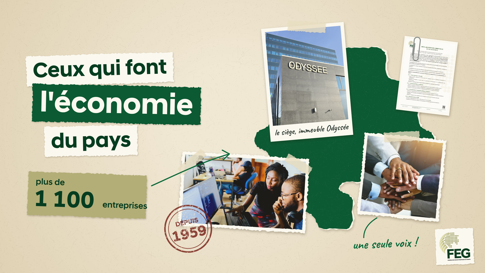
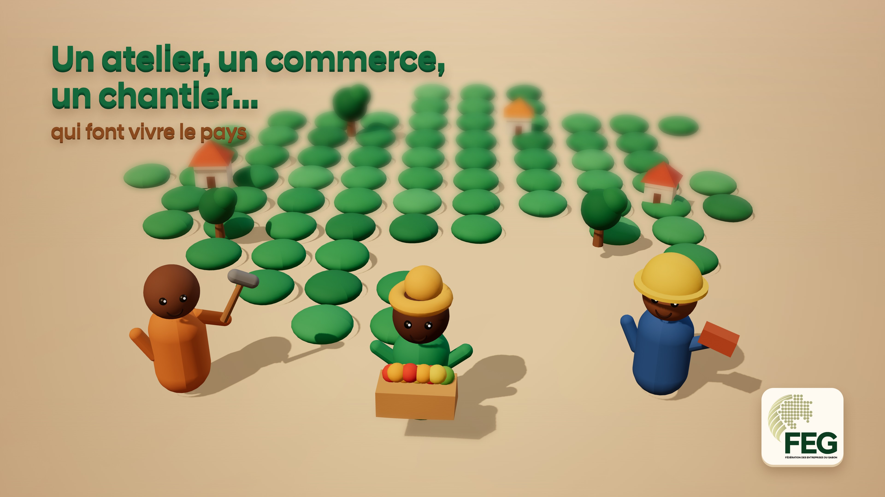
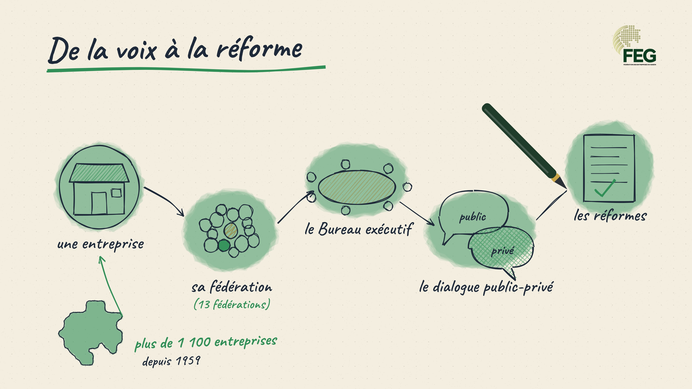
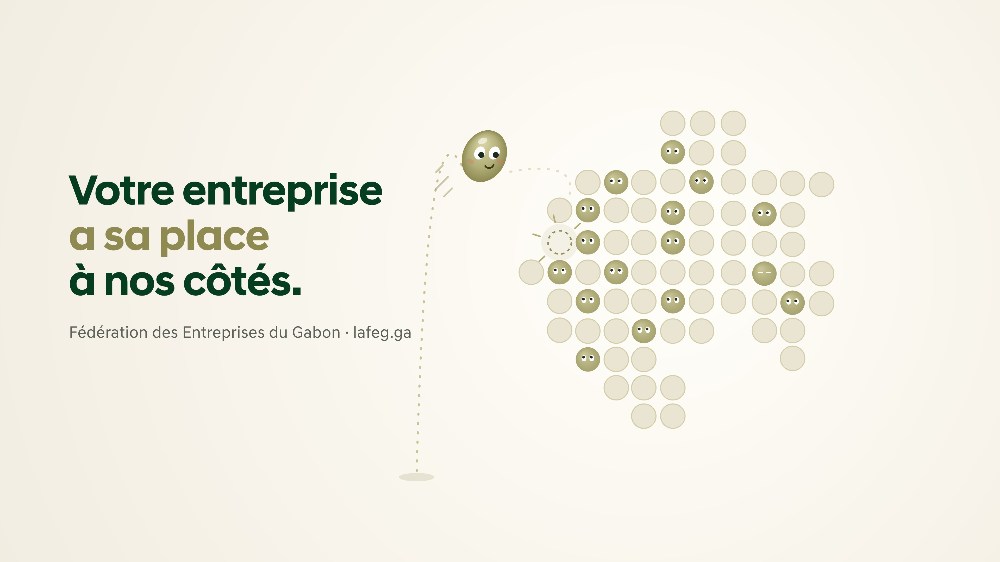
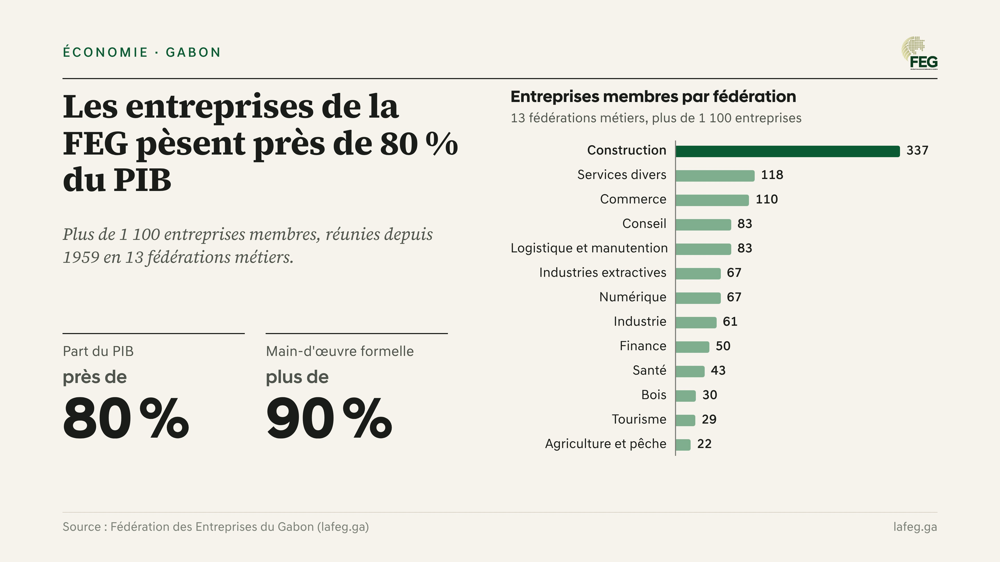

Une image par style, prise à un moment du film, pour choisir sur pièce.

1Titre officiel
Gravure et guillochis à l'encre vert et bronze : prestige, institution.

2Typographie animée
Les mots et les chiffres deviennent l'image ; se comprend sans le son.

3Collage photo
Photos découpées, papiers déchirés, tampons et feutre : humain, chaleureux.

4Pâte à modeler
Miniature 3D aux formes rondes, lumière chaude : tendre et mémorable.

5Carnet de croquis
Schéma tracé à l'encre en direct, lavis vert : pédagogique.

6Le point bronze
Un point du logo prend vie et trouve sa place : minimaliste, attachant.

7Journal économique
Mise en page de presse, chiffres clés et classement : crédible.
Quel numéro préférez-vous ?
Chaque style peut aussi se décliner en vertical 9:16, en teaser de 20 s ou sans le son, avec sous-titres.